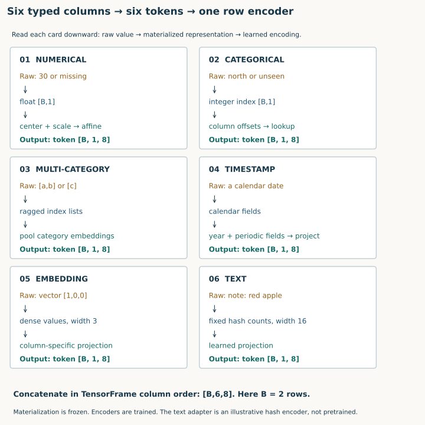
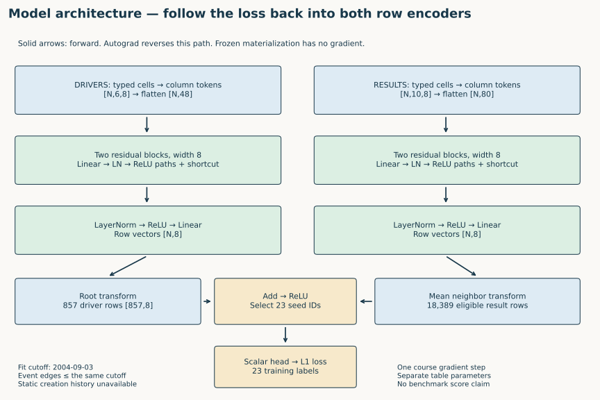
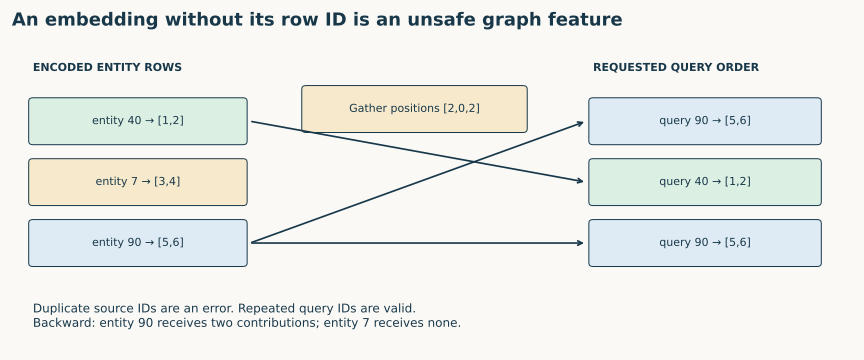

Year 4 · Quarter 1 · Lesson 125
PyTorch Frame: from typed columns to graph node features
1 · We have a graph and a question. What does each node contain?¶
Lesson 122 made database rows into nodes. Lesson 123 restricted their temporal neighborhoods. Lesson 124 separated prediction queries from entity rows. We still need a differentiable function that turns a driver's nationality, birth date and name into a vector the GNN can consume.
Lesson 075 established the row-encoder API contract. Here we open its numerical and categorical kernels, verify the ResNet computation, and connect it to real graph features and a differentiable training loss.
Your tangible win: materialize typed columns, implement two encoding kernels, preserve entity identity, and trace a training loss back into two table-specific row encoders. You will export features for every row of the nine-table F1 database censored at 2010-01-01. The portable notebook contains the actual data, visible code and four live TODO/CHECK tasks.
This serves our mission: to defend an RDL result, you must explain what information enters the model before discussing the power of message passing. A correct graph cannot repair a leaked scaler or vectors attached to the wrong entities.
Primary reading: Hu et al., PyTorch Frame, §§3–4 and §5.3. Read Figure 1 first, then follow one numerical and one categorical column through §3. Our API reference is Frame 0.3.0, pinned independently of the historical paper experiment.
Route: Sections 1–7 are the core sitting. Run the notebook and evidence audit in a second sitting. Student notebook · Executed solution · Reference · Reproduction contract.
2 · A semantic type chooses a computation¶
A pandas dtype describes storage. A Frame semantic type, or stype, describes how a model should interpret a column. Integer statusId could represent a category; a postal code should not acquire meaning from arithmetic distance. The course schema makes its choices explicit—including treating F1 statusId numerically as a deliberate simplification you should challenge.
| Semantic type | Materialized representation | Encoder in this lab | Meaning of the learned operation |
|---|---|---|---|
| Numerical | Floating values, missing as NaN | LinearEncoder, mean imputation |
A separate affine embedding per column |
| Categorical | Column-local integer IDs, unknown/missing as −1 | EmbeddingEncoder |
A separate vocabulary region per column |
| Multicategorical | Ragged lists of category IDs | MultiCategoricalEmbeddingEncoder |
Pool embeddings within each cell |
| Timestamp | Year and calendar components | TimestampEncoder |
Year position plus cyclic components, then projection |
| Embedding | Dense vectors, possibly different widths by column | LinearEmbeddingEncoder |
Project each column to a common width |
| Text embedded | Frozen text vectors, grouped under embedding | Text adapter + projection | Learn from supplied text features |
text_embedded is the current code name; the paper also uses text_embedding. It shares the embedding parent type in this pinned API. text_tokenized is a different route: retain token sequences and allow a text model to train. Our lab does not fine-tune a language model. Type definitions · encoder source.

Diagram trace. Follow one numerical and one categorical column. Separate materialized values from learned tokens and from the final row vector. On a narrow screen, scroll the figure sideways.
Predict: can you batch a numerical column and a variable-length tag list into one ordinary rectangular numeric tensor without choosing a representation? Explain what padding or offsets would have to mean. A TensorFrame keeps the typed blocks and column names together so that this choice stays explicit.
3 · Materialize once; reuse the fitted meaning¶
Materialization converts cells into tensors and records data-dependent state: numerical statistics, categorical vocabularies, timestamp statistics, and column roles. It is generally preprocessing, outside autograd. The encoder parameters are learned later. Mixing these two kinds of state makes leakage hard to see.
For the small train/query exercise, the correct order is:
ds = Dataset(train, col_to_stype=types,
col_to_text_embedder_cfg=TextEmbedderConfig(fixed_text_vectors))
ds.materialize()
held = ds.convert_to_tensor_frame(query)
The query conversion uses the training converter. Concatenating train and query before materialization changes that converter. Fitting separate converters on each split is also wrong: the same categorical integer could acquire different meanings. Pinned Dataset implementation.
TODO 1 — fit_and_convert: return the fitted dataset and query TensorFrame. CHECK: fitting on [10,20,30] keeps mean 20 even if query values change to ±10⁹; an unseen category remains −1. The checker deliberately changes the query population, not merely the output shape.
The widget uses population standard deviation, as this Frame release does. With mean imputation, a missing numerical value becomes the training mean and has normalized value zero. That makes its token equal to the learned bias. It does not give the model an explicit missingness indicator. If missingness predicts the target, add a separately declared feature and evaluate that change.
For the full F1 course run, dated-table statistics use rows on or before 2004-09-03, and the frozen converter is applied to rows through 2010-01-01. Static tables are fitted in full because their creation/version histories are absent. That is an explicit historical-validity gap; a stored birth date is not proof that its containing row or mutable attributes were known then.
4 · Reconstruct the numerical and categorical kernels¶
For numerical column j, width d, and row i:
z[i,j] = (fill(x[i,j], μ[j]) − μ[j]) / scale[j]
token[i,j,:] = z[i,j] × weight[j,:] + bias[j,:]
scale is the stored standard deviation plus the release's epsilon. Parameters have shape [C,d]; output has shape [B,C,d]. Different columns can use different affine maps. The map is linear in the normalized value, but the later residual blocks introduce nonlinear column interactions.
filled = torch.where(torch.isnan(raw), mean, raw)
tokens = ((filled - mean) / scale).unsqueeze(-1) * weight + bias
TODO 2 — numeric_tokens: implement this without mutating the raw input. CHECK: with supplied mean 20, scale 10, weight [2,−1], bias [.5,.5], value 30 maps to [2.5,−.5]; a missing value maps to [.5,.5]. These are hand-supplied constants, not a claim that Frame estimates scale 10 from [10,20,30]. The checker also tests finite parameter gradients.
Categorical columns require a different operation. Suppose their vocabulary sizes are [2,3]. Their offsets are [0,2]; reserve index 0 for unknown/missing. Column-local ID 0 maps to global index 1 in the first column and 3 in the second. Without that offset, unrelated categories share a learned vector.
offsets = torch.cumsum(sizes, 0) - sizes
indices = torch.where(raw < 0, 0, raw + offsets + 1)
tokens = embedding(indices)
TODO 3 — categorical_indices: apply offsets and reject IDs outside the fitted vocabulary. CHECK: [[0,0],[1,2],[-1,1]] becomes [[1,3],[2,5],[0,4]]. In this configuration padding index 0 is a zero vector and receives no embedding gradient. Unknown and missing are therefore indistinguishable at this encoder; test whether that assumption suits your task. Exact numerical/categorical kernels.
5 · Model architecture: how a row becomes a GNN input¶
Tokens initially describe separate cells. They need to interact before one row vector can summarize them. The visible implementation uses Frame's ResNet organization: flatten tokens, pass them through residual blocks, then apply a normalized readout. It is not an attention model.
For the drivers table, six columns at width 8 give [N,6,8], then [N,48]. The first block projects 48 values to width 8 and projects the shortcut to the same width. The second block keeps width 8. Each branch applies linear → LayerNorm → ReLU → dropout twice, adds the shortcut, and passes its result onward. The decoder is LayerNorm → ReLU → Linear. Our course run disables dropout to make the trace deterministic.
tokens, names = self.tokens(tf)
x = tokens.flatten(1)
x = self.backbone(x)
row_vectors = self.decoder(x)
The exact Frame ordering matters: concatenate in tf.stypes order, and retain the fitted names within each type. Iterating an arbitrary dictionary can yield all the right dimensions and the wrong model. Our source comparison caught precisely this bug. The notebook exposes the residual-block implementation and the pinned upstream source side by side. Frame ResNet.

Diagram trace. Follow one numerical and one categorical column. Separate materialized values from learned tokens and from the final row vector. On a narrow screen, scroll the figure sideways.
The diagram is the executed course model. Driver and result encoders have separate parameters but the same output width. A one-relation GraphSAGE operator averages historical result vectors by driverId, transforms root and neighbor vectors separately, adds them, applies ReLU, and predicts only the 23 training seeds. The dated result rows are filtered to the query cutoff before aggregation. The loss reaches both row encoders through differentiable projections and aggregation.
The historical candidate architecture is larger: the archived RelBench code uses four width-128 row blocks, two typed GraphSAGE layers, relative-time encodings and a seed head. The paper names Frame ResNet + HeteroSAGE, but does not attest this exact source snapshot. Neither the small course model nor this source resemblance establishes its Table 2 result. Archived candidate model · typed encoder/GNN.
Predict: modify a different driver's row. With LayerNorm and dropout disabled, your row encoder output should stay unchanged. Modify one of your driver's historical result rows: the GNN prediction may change. Column interaction and graph interaction operate along different axes.
6 · Preserve identity across the encoder–GNN boundary¶
The output contract is richer than [N,d]. It includes table identity, entity IDs, column roles, fitted statistics, model parameters and the information cutoff. An embedding file with no IDs cannot safely be attached to a graph after sorting or filtering.

TODO 4 — align_rows: gather encoded rows by requested entity IDs. Duplicate IDs in the source export are invalid; repeated requested IDs are legal. CHECK: source IDs [40,7,90] and requests [90,40,90] gather positions [2,0,2]. The backward check gives entity 90 two gradient contributions. Indexing by an ID value or assuming request order equals storage order must fail.
For the full export, every table is deliberately reversed and then realigned by ID. The independent audit also compares all vectors against the upstream Frame forward pass with identical weights. The lab uses primary and foreign keys as structure, removes the table's event-time column from row features, and keeps the time boundary separately. Other meaningful timestamp features, such as date of birth, still use a timestamp encoder.
A cached node embedding is valid only for the encoder state that produced it. If the GNN is training the row encoder end to end, repeatedly reusing detached precomputed vectors would cut that gradient path. The exported file is an inspection artifact; the gradient exercise recomputes live vectors.
7 · Execute the complete course feature path¶
Author-reference execution: complete course feature path, not a paper-score reproduction.
| Table | Fitting rows | Encoded rows | Columns | Output width |
|---|---|---|---|---|
| constructor_results | 8,441 | 9,408 | 1 | 8 |
| constructor_standings | 9,189 | 10,170 | 3 | 8 |
| circuits | 77 | 77 | 7 | 8 |
| qualifying | 2,148 | 4,082 | 2 | 8 |
| drivers | 857 | 857 | 6 | 8 |
| results | 18,389 | 20,323 | 10 | 8 |
| races | 727 | 820 | 4 | 8 |
| standings | 25,999 | 28,115 | 3 | 8 |
| constructors | 211 | 211 | 3 | 8 |
Total 74,063 rows. Maximum difference from the upstream Frame forward pass with identical weights: 0. All IDs and finite-value checks passed. The separate one-step exercise used 23 training queries, 18,389 eligible result rows, and updated 58 parameter tensors. Measured report · Independent audit.
The notebook runs from an empty directory with embedded, checksum-verified F1 database and task archives. It materializes all nine tables, calls your numerical/categorical kernels, gathers by your identity function, and exports l125-encoded-reg.npz. Each table has an *_ids array and *_vectors array. l125-feature-report.json records shapes, fitting populations and one-step gradient evidence.
The gradient step uses the released training task rows at 2004-09-03 and only result events no later than that cutoff. Its 23 labels supervise the seed outputs. Labels never enter the row features. Initial loss is recorded solely as a debugging observation; there is no test-set performance estimate from one optimizer step.
Read the limitations before interpreting the export: width 8, two residual blocks, deterministic 16-bin hashed text counts, random initial weights, a single graph relation for the gradient step, and no static creation history. Text hashing has collisions and no pretrained semantics. Real F1 data exercise numerical, categorical, timestamp and embedded-text paths; the six-type fixture separately covers multicategorical and external vectors. These are useful implementation tests, not the published Stack Exchange experiment.
8 · Full reproduction audit: what is actually recoverable?¶
The selected target is Hu et al. Table 2, rel-stackex-engage: ROC-AUC 0.854. It predicts whether a user contributes a vote, comment or post over the next two years. The contemporaneous source implements a 730-day window, with validation at 2019-01-01 and test at 2021-01-01. Paper §5.3/Table 2 · archived task SQL.
Current result: NOT_RUN. On 2026-09-27, all six probed historical/archive endpoints returned HTTP 404, including the original database, task and raw-data paths. The original SHA-256 identities are retained in the audit, but no matching archive was recovered. This finding is bounded to the checked sources; it is not proof that nobody has a private or archival copy. Probe evidence.
There are protocol gaps even if the data are recovered. The paper does not identify a precise source commit/seed ensemble. The archived example regenerates labels with process=True, uses an unpinned GloVe sentence-transformer revision, and has no historical environment lock. A modern task with a similar name does not close these gaps.
| Evidence | State | What it establishes |
|---|---|---|
| Four learner contract checks + mutation failures | PASS | Correct tested mechanisms and failure detection |
| Frame outputs, gradients, Adam update | MATCH | Current pinned operator/model parity |
| Every F1 node-feature row | PASS | Complete course feature path, same-weight reference agreement |
| Real training-query gradient step | PASS | Loss reaches two table-specific encoders |
| Historical Stack Exchange target | NOT_RUN | No recovered checksum-matching input; no measured ROC-AUC |
| Historical binary/whole-paper reproduction | NOT_ESTABLISHED | Source resemblance is insufficient |
| Live Colab / deployment | NOT_CHECKED | Local notebook/browser checks are separate |
| Learner mastery | PENDING_WRITTEN_DEFENSE | Author execution is not your exit artifact |
The reproduction contract includes exact commands, pinned model/trainer sources, the recovery preflight, source assumptions and compute ledger. Paid compute used: $0**. The approved **$10 aggregate cap remains unused; launching a different benchmark would not reproduce this target.
9 · Retrieval, interventions and your exit artifact¶
Close the notebook and answer before checking the implementation:
- Why can a categorical ID of zero mean different things in two columns? Derive the offset for a third column with vocabulary size 4 after columns of sizes 2 and 3.
- Under mean imputation, what numerical token represents missingness? How would you preserve a separate missingness signal?
- Which fitted state changes if future rows are included, even when their labels are hidden? Give one numerical and one categorical example.
- Why does the first residual block need a shortcut projection for six width-8 tokens? Which axis mixes columns, and which operation later mixes rows?
- Why can repeated query IDs be correct while repeated source entity IDs are wrong? Show the backward accumulation for
[90,40,90]. - Which evidence is still missing before you could compare a score with 0.854? Distinguish archive identity, protocol identity, runtime identity and metric computation.
EXIT submission: your four implementations, the exported node features with IDs, the JSON report, and a one-page explanation of the six questions. Add one deliberate intervention: remove categorical offsets, contaminate fitted statistics, shuffle vectors without IDs, or detach one encoder before the graph loss. Predict the failure, run it, and explain the observed result. Do not overwrite the correct baseline.
A passing solution notebook is author-reference evidence. Your status remains PENDING_WRITTEN_DEFENSE until you can explain and defend the computation. Revisit questions 2, 4 and 5 tomorrow without notes; revisit the archive/protocol distinction next week.
Ask the agent follow-up questions whenever a tensor, fitted statistic or gradient edge is unclear. Next, the separately planned L125b Universal Row Encoder asks how to decouple the encoder from a particular graph stack; L126 examines the RelBench beta paper. This lesson prepares the interface needed for both.
Carry this forward. Use the benchmark API to keep database inputs, task questions and evaluation aligned. Continue to Lesson 126.